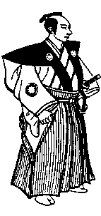

Самурай должен прежде всего постоянно помнить — помнить днем и ночью, с того утра, когда он берет в руки палочки, чтобы вкусить новогоднюю трапезу, до последней ночи старого года, когда он платит свои долги — что он должен умереть. Вот его главное дело. Если он всегда помнит об этом, он сможет прожить жизнь в соответствии с верностью и сыновней почтительностью, избегнуть мириада зол и несчастий, уберечь себя от болезней и бед, и насладиться долгой жизнью. Он будет исключительной личностью, наделенной прекрасными качествами.
Ибо жизнь мимолетна, подобно капле вечерней росы и утреннему инею, и тем более такова жизнь воина. И если он будет думать, что можно утешать себя мыслью о вечной службе своему господину или о бесконечной преданности родственникам, случится то, что заставит его пренебречь своим долгом перед господином и позабыть о верности семье.
Но если он живет лишь сегодняшним днем и не думает о дне завтрашнем, так, что, стоя перед господином и ожидая его приказаний, он думает об этом как о своем последнем мгновении, а глядя в лица родственников он чувствует, что никогда не увидит их вновь, тогда его чувства долга и преклонения будут искренними, а его сердце будет исполнено верности и сыновней почтительности.
Но если он не помнит о смерти, он будет беззаботен и неосторожен, он будет говорить слова, которые оскорбляют других, тем самым давая повод для споров. Если на это не обратят внимания, их можно будет разрешить, но если сделают упрек, он может окончиться ссорой.
Если он прогуливается увеселительных местах среди толпы без должной осторожности, то может столкнуться с каким-нибудь большим глупцом и будет тянут в ссору еще прежде, чем поймет это. Тогда он может быть убит, имя его господина — запятнано, а его родители и родственники — осыпаны упреками.
Все эти несчастья идут от того, что он не помнит все время о смерти. Тот же, кто делает это, будет, как и полагается самураю, говоря самому или отвечая другим, тщательно взвешивать каждое слово и не вдаваться в бесполезные споры.